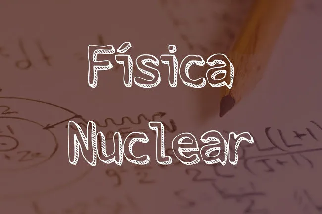

Física Nuclear é uma importante área da Física e tem como principal objetivo o estudo dos fenômenos relativos aos núcleos atômicos.
Física Nuclear é o estudo das partículas constituintes dos núcleos atômicos, como prótons e nêutrons, e das interações existentes entre elas. Essas interações são capazes de manter as partículas unidas em distâncias extremamente pequenas, da ordem de poucos nanômetros (10-9 m). Alguns exemplos de fenômenos estudados pela Física Nuclear são decaimentos radioativos, fissões nucleares, fusões nucleares, etc.
A Física Nuclear estuda os fenômenos físicos relativos aos stronnúcleos atômicos, como transições de energia, decaimentos radioativos, fissão e fusão nuclear, entre outros. O estudo da Física Nuclear envolve o desenvolvimento de modelos que expliquem o funcionamento dos núcleos atômicos e sua constituição, aplicações da energia nuclear em tratamentos médicos, desenvolvimento de tecnologias para a detecção de radiação, novas fontes de energia, etc.
As aplicações tecnológicas diretamente relacionadas ao estudo da Física Nuclear estão relacionadas a processos industriais, eficiência energética, explorações astronômicas, etc. Além disso, esse estudo promove melhorias à saúde, meio ambiente e agricultura.
Nos últimos anos, a Física Nuclear tem possibilitado, por meio da medicina
nuclear, o
surgimento de tecnologias de grande impacto à saúde humana. Um crescente
número de exames de
imagem tem sido realizado com uso de diferentes tipos de radiação e partículas. Além disso,
um enorme número de pacientes recebe tratamento oncológico por meio da radiação produzida
por aceleradores de partículas ou fontes naturais de radiação, como os
radioisótopos
césio-137, iodo-131 , entre outros encontrados na natureza. Atualmente,
existem tratamentos
de câncer avançados, com menos efeitos colaterais, que são capazes de
destruir os tecidos
afetados pelo câncer por meio da emissão de prótons, nêutrons, íons pesados e
radiação
eletromagnética ionizante.
Alguns exames de imagem baseiam-se em conhecimentos originados de pesquisas desenvolvidas
pela Física Nuclear, como tomografias computadorizadas, ressonâncias magnéticas
nucleares,
tomografias por emissão de pósitrons, tomografias computadorizadas de
emissão de fótons
simples. Esses exames fornecem imagens ricamente detalhadas de órgãos e estruturas delicados
sem que haja necessidade de intervenções cirúrgicas e com segurança relativamente alta aos
pacientes.
A Física Nuclear também é largamente aplicada aos estudos do meio ambiente: a datação dos
núcleos radioativos presentes nas rochas e no solo, por
exemplo, é de importância vital para
a determinação do passado da Terra e para a definição de padrões climáticos.
A atmosfera terrestre é constantemente bombardeada por raios cósmicos altamente energéticos,
cujas interações com as moléculas de carbono presentes no ar produzem o isótopo
carbono-14.
Esse elemento raro tem uma meia vida extremamente longa: a cada
5700 anos, o número desse
tipo de radioisótopo presente em seres vivos, como plantas e animais, cai
pela metade. Dessa
forma, é possível estudar a idade de fósseis e, até mesmo, determinar a época em que grandes
florestas ou ecossistemas inteiros deixaram de viver.
Muitas técnicas derivadas da Física Nuclear, mais explicitamente de
aceleradores de
partículas, passaram a ser usadas em processos industriais, promovendo
aumento de sua
eficiência e grande impacto econômico.
Uma das aplicações mais importantes para a indústria são os detectores
utilizados na
determinação da composição de materiais semicondutores. Os semicondutores
figuram como a
matéria-prima de todos os componentes eletrônicos usados, desde chips presentes nos
computadores e celulares até simples conexões elétricas. Para que esses componentes
funcionem perfeitamente, é de fundamental importância que sua pureza seja garantida. Dessa
forma, técnicas de caracterização de elementos químicos, como a PIXE
(emissão de raios X
induzida por partículas), medem a emissão de raios X de amostras
bombardeadas por prótons
durante a colisão do feixe de prótons com os núcleos atômicos. Essas técnicas medem também a
emissão de ondas eletromagnéticas para determinar características, como
A técnica PIXE e outras técnicas, como a PIGE (emissão
de raios gamas induzida por prótons),
são capazes de determinar a exata composição de diversos tipos de amostras. São também
utilizadas em museus para determinar-se a originalidade de uma obra e em sondas
espaciais,
como a Mars Rover, que tem o intuito estudar a composição do planeta Marte.
Atualmente, cerca de 11% de toda a energia elétrica produzida no mundo vem de aproximadamente 450 reatores nucleares. Toda energia nuclear é gerada a partir da fissão de núcleos atômicos pesados, como o urânio, que se tornam instáveis após a captura de um nêutron lento emitido em sua direção.
Desde 2016, existem cerca de 60 reatores nucleares em construção em todo o
mundo e outros
150 planejados. Quando implementadas, essas usinas nucleares serão
responsáveis por 50% da
geração mundial de energia.
Dezesseis países dependem da energia nuclear para produzir pelo menos 25%
de toda sua
demanda energética. A França, por exemplo, tem 75% de toda sua energia
produzida por usinas
nucleares em decorrência da escassez de recursos energéticos naturais, como potencial
hídrico, eólico, geotérmico, etc.
As usinas nucleares operam por meio das reações em cadeia promovidas por elementos físseis,
como o radioisótopo urânio-238. Além da emissão de partículas, esses
elementos emitem ondas
eletromagnéticas que aquecem a água a altíssimas pressões e
temperaturas. Quando liberada,
essa água move uma grande turbina (chamada de dínamo), gerando corrente elétrica por meio do
fenômeno de indução eletromagnética.
Para estudar a fundo sobre Física Nuclear, normalmente, é necessário graduar-se em Física
para, em seguida, especializar-se com um mestrado ou doutorado na área. No entanto, durante
o curso de graduação, estudam-se fenômenos de origem nuclear nos conteúdos regulares (isso
pode variar de acordo com a ementa de cada curso). Além disso, é possível aprender sobre
Física Nuclear por meio de pesquisas realizadas em programas de iniciação científica.
Os conteúdos relacionados à Física Nuclear mais comuns nos cursos de Física tratam sobre
modelos nucleares modernos, transições de níveis de energia de núcleos atômicos, emissão de
radiação, decaimentos radioativos, etc.
Confira algumas das principais fórmulas usadas no estudo da Física Nuclear e suas utilizações:
A história da Física Nuclear começou no final do século XIX e vem sendo construída até os
dias recentes. Confira uma breve linha do tempo com alguns dos marcos mais importantes da
Física Nuclear:
1896 – Henri Becquerel, um físico francês, descobriu que sais de urânio são
capazes de
manchar placas fotossensíveis, descobrindo, assim, os “raios urânicos”.
1897 – Ernest Rutherford fez pesquisas sobre os “raios urânicos” de
Becquerel e descobriu as
radiações alfa e beta, classificando-as quanto às suas cargas elétricas e ao seu poder de
penetração na matéria.
1898 – Marie Currie e seu esposo, Pierre Currie,
descobriram que os “raios urânicos” também
são emitidos por outros elementos (tório) e propuseram o termo “radioatividade”. Descobriram
e batizaram dois novos elementos radioativos: polônio e rádio.
1903 – Ernest Rutherford propôs a medição da idade geológica da Terra por
meio da detecção
de elementos radioativos em seu interior. Além disso, sugeriu que a Terra é muito mais
antiga do que se acreditava. Alguns anos depois, descobriu-se que a Terra tem cerca de
4,2
bilhões de anos. Na época, acreditava-se em algumas centenas de milhões de
anos.
1906 – Ernest Rutherford descobriu que a radiação alfa é, na verdade, o
núcleo de um átomo
de hélio.
1909 – Os estudantes de graduação Eugene Mardsen e
Hans Geiger realizaram o experimento da
folha de ouro, no qual uma fina película aurífera é bombardeada por partículas alfa, que são
refletidas, indicando a grande densidade do núcleo atômico.
1930 – Paul Dirac reuniu os campos da relatividade especial de Albert
Eistein à teoria
quântica e elaborou a equação de Dirac, prevendo, assim, a existência da
antimatéria.
1931 – Físicos debateram possibilidades para a não conservação da energia
durante os
decaimentos beta. Nessa época, o físico italiano Enrico Fermi propôs que, nesse tipo de
decaimento, ocorria a emissão de duas partículas neutras praticamente indetectáveis, as
quais ele batizou de neutrinos.
1932 – Carl Anderson detectou a existência dos pósitrons, partículas com
carga elétrica
oposta e massa igual à dos elétrons.
1935 – O físico japonês Hideki Yukawa propôs que os prótons e nêutrons
presentes no núcleo
dos átomos são ligados por uma força nuclear forte, muito mais intensa que a própria
repulsão elétrica.
1938 – Otto Hahn e Lise Meitner descobriram a fissão
nuclear ao
bombardearem núcleos de
urânio com nêutrons.
1942 – Enrico Fermi foi nomeado o principal cientista responsável pelo
projeto Manhattan,
intencionado em produzir a primeira reação nuclear artificial em cadeia.
1945 – Em 16 de julho, a primeira bomba nuclear foi detonada no Novo
México. Três meses
depois, duas bombas atômicas foram lançadas nas cidades de Hiroshima e
Nagasaki, no Japão,
deixando mais de 100 mil mortos.
Um dos precursores da pesquisa científica na área da Física no Brasil foi o físico ucraniano Gleb Wataghin. Wataghin ingressou na USP em 1934, onde iniciou suas pesquisas sobre raios cósmicos e sobre Física Nuclear. Na época, investia-se pouco nesse tipo de pesquisa, então, os primeiros instrumentos necessários para o estudo da Física Nuclear foram construídos pelos alunos da primeira turma de Física daquela universidade: Marcelo Damy e Oscar Sala. A partir dessa época, a pesquisa em Física Nuclear no Brasil cresceu até atingir visibilidade internacional.